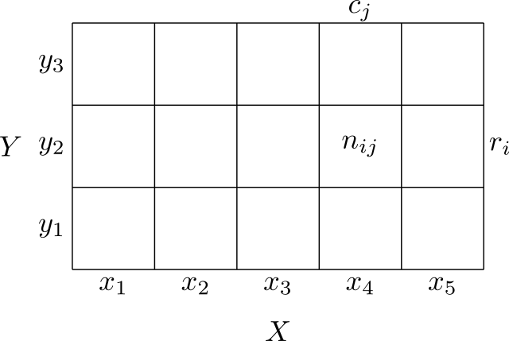
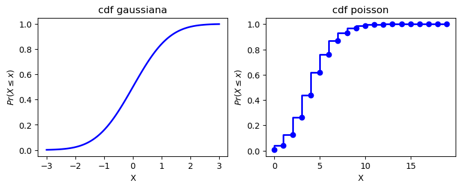
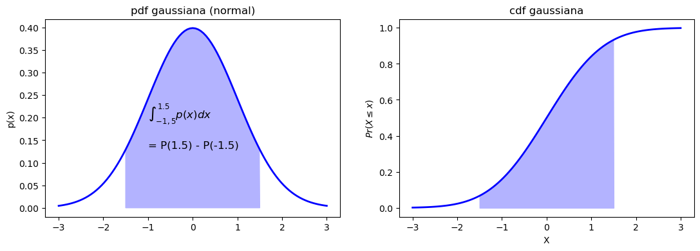
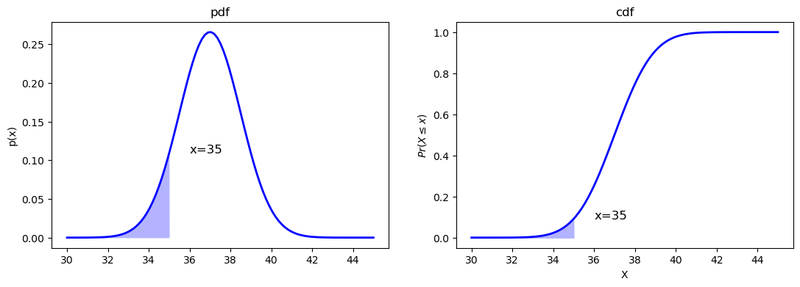
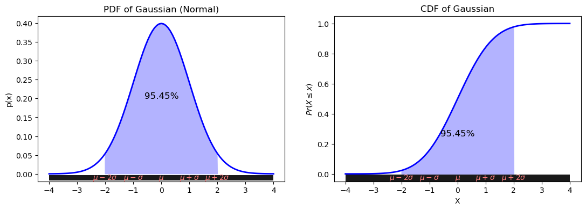
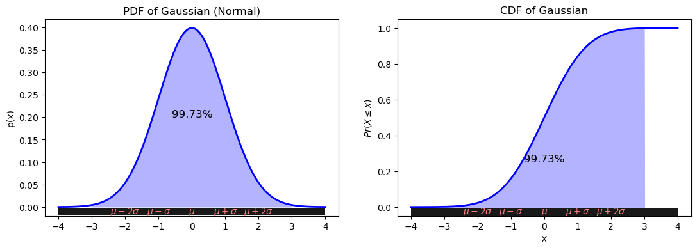

from IPython.display import display, HTML
image_path = "img/joint_dist_tikz.png"
display(HTML('<div style="text-align: center;"><img src="{}" width="30%"/></div>'.format(image_path)))
Autor: Emmanuel Alcalá
Google Scholar
Suponer que \(X\) representa una cantidad desconocida de interés, como la temperatura de una máquina. Si los valores de \(X\) son desconocidos o cambian, decimos que \(X\) es una variable aleatoria, o VA. El conjunto de todos los valores posibles se denota como \(\mathcal{X}\), llamado espacio muestral o espacio de estados. Un evento es un subconjunto de valores del espacio muestral. Por ejemplo, si \(\mathcal{X}\) es el lado de un dado al ser lanzado, \(\mathcal{X} = \{ 1, 2, 3, 4, 5, 6 \}\), el evento “cae 1” se denota \(X = 1\), y “ver un número impar” se denota \(X \in \{ 1, 3, 4\}\), el evento “cae entre 4 y 6” como \(4 \leq X \leq 6\).
Vamos a enlazar todos los conceptos:
Variable Aleatoria \(X\)
Pensemos en \(X\) como la temperatura de un horno. Aquí, \(X\) no es un valor de temperatura específico. En cambio, es una “regla” que nos dice cómo interpretar las mediciones de temperatura que podríamos obtener del horno. Técnicamente, una variable aleatoria es una función que asigna un número real a cada resultado en el espacio muestral. En este caso específico, la función es una función de identidad, lo que significa que \(X\) asigna el mismo valor a cada resultado en el espacio muestral. Lo anterior podríamos describirlo como \(X: \mathcal{X} \rightarrow \mathbb{R}\), o como \(X(\omega) = \omega\) para todo \(\omega \in \mathcal{X}\), en donde \(\omega\) es un resultado en el espacio muestral.
Una variable aleatoria más compleja puede ser el índice de masa corporal. El Índice de Masa Corporal (BMI, por sus siglas en inglés) es una medida comúnmente utilizada para evaluar la proporción de peso a estatura de un individuo. El BMI se calcula mediante la fórmula:
\[ \text{BMI} = \frac{{\text{peso en kg}}}{{(\text{altura en m})^2}} \]
En el contexto de la teoría de la probabilidad, podemos considerar el BMI como una Variable Aleatoria \(X\) que es una función del peso y la altura de un individuo.
La Variable Aleatoria \(X\) asignaría a cada par \((w, h)\) en el espacio muestral un valor del BMI calculado mediante la fórmula mencionada:
\[ X(w, h) = \frac{w}{h^2} \]
Espacio Muestral \(\mathcal{X}\)
Para el ejemplo del horno, el espacio muestral \(\mathcal{X}\) podría ser todos los valores que la temperatura del horno podría tomar en una escala específica, digamos, de 100 a 250 grados Celsius: \(X={100,101,102,…,250}\).
Para el ejemplo del BMI, el espacio muestral \(\mathcal{X}\) podría ser el conjunto de todas las posibles combinaciones de peso y altura para un grupo de individuos. Por ejemplo:
\[ \mathcal{X} = \{ (w, h) | 40 \leq w \leq 200, 1.2 \leq h \leq 2.5 \} \]
Realización \(x\)
Si tomas una lectura real del termómetro en un momento específico y muestra, digamos, 180 grados Celsius, esa medida es una “realización” \(x\) de la Variable Aleatoria \(X\).
Para el BMI, una realización \(x\) de \(X\) sería el BMI específico calculado para una combinación particular de peso y altura. Por ejemplo, si alguien tiene un peso de 70 kg y una altura de 1.75 m, la realización sería \(x = X(70, 1.75) = 22.86\).
Eventos
Un “evento” es un subconjunto específico de posibles temperaturas que podríamos encontrar interesantes. Por ejemplo:
Nota: generalmente, no se hace distinción entre una variable aleatoria y su realización. Por ejemplo, \(X\) y \(x\) se usan indistintamente para denotar la realización de una variable aleatoria. Así, aunque técnicamente deberíamos denotar la probabilidad de que el horno esté por debajo de 150 grados como \(P(X<150)\), en la práctica, a menudo escribimos \(P(x<150)\).
¿Qué es una probabilidad?
Definición: La probabilidad es una medida que describe la posibilidad de que ocurra un evento en relación con la totalidad de posibles eventos. Se expresa numéricamente entre 0 y 1, donde 0 indica imposibilidad y 1 indica certeza.
Matemáticamente: Sea $ S $ un espacio muestral, es decir, el conjunto de todos los posibles resultados de un experimento, y $ A $ un evento específico que pertenece a $ S $. La probabilidad $ P(A) $ de que ocurra $ A $ se define como:
\[ P(A) = \frac{\text{número de casos favorables para } A}{\text{número total de casos en } S} \]
Algunas propiedades de las \(P()\) son:
Podemos ilustrar varios conceptos de probabilidad utilizando un arreglo en dos dimensiones. Por ejemplo, en la siguiente imagen (adaptado de MML-6.2)
from IPython.display import display, HTML
image_path = "img/joint_dist_tikz.png"
display(HTML('<div style="text-align: center;"><img src="{}" width="30%"/></div>'.format(image_path)))muestra dos variables aleatorias bivariadas, \(X\) (que puede tomar valores \(x_j, j = 1, 2, \dots, M\)) y \(Y\) (que puede tomar valores \(i=1, 2, \dots, L\)).
La probabilidad (conjunta) de que \(X=x, Y=y\) se define como
\[ p(x, y) \overset{\Delta}{=} \text{Pr}(X = x, Y = y) \]
\(p(x, y)\) se lee “la probabilidad de \(x\) y \(y\)”, en ocasiones escrito usando notación de teoría de conjuntos como \(p(x \cap y)\). Cada entrada (cada celda) en la tabla se calcula contando la cantidad de casos que \((x_j,y_i)\) suceden conjuntamente
\[ \text{Pr}(X = x_j, Y = y_i) = \frac{n_{ij}}{N} \tag{1} \]
En la tabla, si contamos todos los casos de la fila \(i\) tenemos la cantidad total de veces que \(y_i\) sucede, y lo llamamos \(r_i\). Si contamos la columna \(j\) tenemos la cantidad total de veces que \(x_j\) sucede, y que llamamos \(c_j\).
La probabilidad marginal de \(x\), es decir, la probabilidad que \(X=x\) sin importar el valor de \(Y\) se escribe como \(p(x)\) y se calcula como sigue
\[ p(X = x_j) = p(x_j) = \frac{c_j}{N} \tag{2} \]
El número de casos en la columna \(j\) es la suma de casos en cada celda en esa columna, por lo que \(c_j = \sum_i n_{ij}\) (dejando fija \(i\)). Por lo tanto,
\[ p(x_j) = \sum_{i=1}^Lp(x_j, y_i) \tag{3} \]
A la ecuación (3) se le conoce como la regla de la suma. Notar que se fija la columna \(j\) y se itera sobre las filas \(i=1, 2, 3\), por lo que por cada columna \(j\) tenemos una probabilidad \(p(x_j)\), que llamamos la distribución marginal de \(x\).
Si consideramos los casos en los que \(X=x_j\), la fracción de casos en los que \(Y=y_i\) se escribe como \(p(Y=y_i | X=x_j)\), probabilidad que es conocida como probabilidad condicional de \(Y=y_i\) dado que \(X=x_j\). Se obtiene encontrando la fracción de puntos en una columna \(j\) que caen en una celda \((i,j)\) dada
\[ p(y_i | x_j) = \frac{n_{ij}}{c_j} \tag{4} \]
Notar que \(c_j\) es la cantidad total de valores para los cuales \(X=x_j\), y \(n_{ij}\) es una celda particular. Con las ecuaciones (1), (2) y (4) podemos derivar la siguiente relación:
\[\begin{align*} p(x_j, y_i) &= \frac{n_{ij}}{N} = \frac{n_{ij}}{c_j} \frac{c_j}{N}\\ &= p(y_i | x_j)p(x_j) \tag{5} \end{align*}\]
La ecuación (5) es conocida como regla del producto.
Eliminando la notación excesiva, podemos sintetizar las dos reglas como sigue
\[\begin{align*} \text{ \textbf{regla de la suma}}\quad\quad &p(x) = \sum_{y}p(x,y) \\ \text{ \textbf{regla del producto}}\quad\quad &p(x, y) = p(y|x)p(x) \end{align*}\]
Considerando la simetría \(p(x,y) = p(y,x)\) y que \(p(y,x) = p(x|y)p(y)\), encontramos la siguiente relación
\[\begin{align*} p(y|x)p(x) &= p(x|y)p(y)\\ p(y|x) &= \frac{ p(x|y)p(y)}{p(x)}\tag{6} \end{align*}\]
Con
\[\begin{align*} 1. & f(x, y) \geq 0\\ 2. & \sum_{x,y}f(x, y) = 1 \end{align*}\]
La ecuación (6) es llamada Teorema de Bayes, y tiene una importancia en ML y estadística que no puede ser exagerada.
import pandas as pd
import numpy as np
from IPython.display import display, HTML
from tabulate import tabulate
import matplotlib.pyplot as plt
from scipy.stats import *
# Crear distribución conjunta {X,Y}
data = {'Y': np.tile(np.arange(0, 4), 3),
'X': np.repeat(np.arange(0, 3), 4)}
data_for_sampling = pd.DataFrame(data)
data_for_sampling['wgts'] = [0, 3, 9, 3, 2, 18, 18, 2, 3, 9, 3, 0]
# Tomar una muestra aleatoria de la distribución conjunta X,Y, usando wgts como pesos
np.random.seed(452)
sampled_data = data_for_sampling.sample(n=10000, replace=True, weights='wgts')
# Crear una tabla de frecuencia
freq_table = pd.crosstab(sampled_data['Y'], sampled_data['X'], rownames=['Y/X'])
# Mostrar la tabla en formato HTML
display(HTML(tabulate(freq_table, headers='keys', tablefmt='html')))
# X en las columnas, Y en las filas| Y/X | 0 | 1 | 2 |
|---|---|---|---|
| 0 | 0 | 275 | 416 |
| 1 | 446 | 2570 | 1338 |
| 2 | 1251 | 2523 | 396 |
| 3 | 462 | 323 | 0 |
freq_table.sum(axis=1)Y/X
0 691
1 4354
2 4170
3 785
dtype: int64Para el ejercicio 2
# Obtener la distribución conjunta de cada celda
xt_prob = freq_table / freq_table.sum().sum()
def highlight_cells(x, row=0, col=1):
df = pd.DataFrame('', index=x.index, columns=x.columns)
df.loc[row, col] = 'background-color: red; color: black'
return df
styled_table = xt_prob.style.apply(highlight_cells, axis=None)
display(styled_table)| X | 0 | 1 | 2 |
|---|---|---|---|
| Y/X | |||
| 0 | 0.000000 | 0.027500 | 0.041600 |
| 1 | 0.044600 | 0.257000 | 0.133800 |
| 2 | 0.125100 | 0.252300 | 0.039600 |
| 3 | 0.046200 | 0.032300 | 0.000000 |
La celda en rojo corresponde a la probabilidad
\[ p(y=0, x=1) = \frac{325}{10000} \]
Para el ejercicio 3
Ahora, para calcular la probabilidad condicional \(p(x=1|y=0)\) debemos obtener la probabilidad marginal de \(y\), o \(p(y=0)\).
# Calculate row sums
row_sums = freq_table.sum(axis=1)
# Calculate p(y)
xt_py = freq_table.copy()
xt_py['p(y)'] = [f"{row_sum}/{freq_table.sum().sum()}={row_sum/freq_table.sum().sum():.4f}" for row_sum in row_sums]
# Style the table
def highlight_column(x):
df = pd.DataFrame('', index=x.index, columns=x.columns)
df['p(y)'] = 'background-color: #d4d1d1; color: black'
return df
styled_table = xt_py.style.apply(highlight_column, axis=None)
display(styled_table)| X | 0 | 1 | 2 | p(y) |
|---|---|---|---|---|
| Y/X | ||||
| 0 | 0 | 275 | 416 | 691/10000=0.0691 |
| 1 | 446 | 2570 | 1338 | 4354/10000=0.4354 |
| 2 | 1251 | 2523 | 396 | 4170/10000=0.4170 |
| 3 | 462 | 323 | 0 | 785/10000=0.0785 |
Luego, la probabilidad condicional será la probabilidad conjunta \(p(y=0, x=1)\) dividida por la probabilidad marginal \(p(y=0)\)
\[ p(x=1|y=0) = \frac{p(y=0,x=1)}{p(y=0)} = \frac{325/10000}{725/10000} = \frac{13}{29} \]
En general, la distribución condicional \(p(x | y=0)\) se puede obtener como sigue
# Filter rows where Y == 0
filtered_data = sampled_data[sampled_data['Y'] == 0]
# Count occurrences of each X value
count_data = filtered_data['X'].value_counts().reset_index()
count_data.columns = ['X', 'n']
# Calculate the conditional probability p(x|y=0)
count_data['p(x|y=0)'] = count_data['n'] / count_data['n'].sum()
# Display the table (you can further style this table if you'd like)
display(HTML(tabulate(count_data, headers='keys', tablefmt='html')))| X | n | p(x|y=0) | |
|---|---|---|---|
| 0 | 2 | 416 | 0.602026 |
| 1 | 1 | 275 | 0.397974 |
Para el ejercicio 4.
\(F(X\leq 1,Y\leq 2) = p(x=0, y=0)+p(x=0, y=1)+p(x=0, y=2)+p(x=1, y=0)+p(x=1, y=1)+p(x=1, y=2)=\)
# Create a pivot table
xt = pd.pivot_table(sampled_data, values=None, index='Y', columns='X', aggfunc='size', fill_value=0)
# Normalize to get probabilities
xt_prob = xt / xt.values.sum()
display(HTML(xt_prob.to_html()))| X | 0 | 1 | 2 |
|---|---|---|---|
| Y | |||
| 0 | 0.0000 | 0.0275 | 0.0416 |
| 1 | 0.0446 | 0.2570 | 0.1338 |
| 2 | 0.1251 | 0.2523 | 0.0396 |
| 3 | 0.0462 | 0.0323 | 0.0000 |
La distribución condicional de \(x|y=y\) puede verse totalmente diferente que la distribución marginal \(p(x)\). En la siguiente imagen, tomada de Bishop (PRML-1.1), se ilustra la distribución de dos variables \(X\) y \(Y\). \(X\) puede tomar 9 valores posibles, y \(Y\) 2. La distribución marginal de \(X\), la distribución independientemente de qué valores tome \(Y\), tiene una forma más achatada (más amplia, con mayor varianza) que la distribución condicional a \(Y=1\).

Si \(\mathcal{X}\) es finito o contable infinito (cada miembro de \(\mathcal{X}\) puede asociarse con un elemento de \(\mathbb{N}\)), entonces \(X\) es una variable aleatoria discreta. Una función de masa de probabilidad (PMF, por sus siglas en inglés) es una función que describe la probabilidad de que una variable aleatoria discreta tome un valor específico. En otras palabras, para cada posible resultado en el espacio de muestras, la PMF asigna una probabilidad.
Matemáticamente, la PMF $ P(X = x) $ es una función que satisface las siguientes condiciones:
Si \(X\in \mathbb{R}\) es una función real, se denomina variable aleatoria continua, y es más natural especificar que \(X\) se encuentre en un intervalo, e.g,, \(a \leq X \leq b\), dado que en este caso no se puede crear un conjunto contable de valores posibles que \(X\) puede tomar, pero podemos crear un conjunto finito de intervalos en la linea real, y asociar los eventos de \(X\) que están en esos intervalos.
Si el conjunto de posibles valores que una variable aleatoria $ X $ puede tomar es un intervalo (o una unión de intervalos) en la recta real, entonces $ X $ es una variable aleatoria continua. Una función de densidad de probabilidad (PDF, por sus siglas en inglés) es una función que describe cómo se distribuyen las probabilidades a lo largo de los posibles valores de una variable aleatoria continua. A diferencia de una PMF, donde se asigna una probabilidad directamente a un valor específico, la PDF asigna una densidad. Para obtener una probabilidad real de que $ X $ caiga en un intervalo específico, se integra la PDF sobre ese intervalo.
Matemáticamente, la PDF $ f(x) $ de una variable aleatoria continua $ X $ satisface las siguientes condiciones:
Nota: Dado que estamos tratando con variables continuas, la probabilidad de que $ X $ tome un valor específico es, en teoría, cero. Es decir, $ P(X = x) = 0 $ para cualquier $ x $. En su lugar, trabajamos con probabilidades en intervalos, como se indicó anteriormente.
Las PMFs más usadas son:
La distribución de Bernoulli es un caso especial de la distribución binomial, cuando \(n=1\).
image_path = "img/pmf.png"
display(HTML('<div style="text-align: center;"><img src="{}" width="60%"/></div>'.format(image_path)))Las PDFs más usadas son:
image_path = "img/pdfs.png"
display(HTML('<div style="text-align: center;"><img src="{}" width="60%"/></div>'.format(image_path)))La CDF es estrictamente creciente, y tiene límites 0 y 1.
Sea \(A = (X \leq a)\), \(B = (X \leq b)\) y \(C = (a < X \leq b)\) en donde \(a < b\). Tenemos que \(B\) es la unión de \(A\) y \(C\), es decir, \(B\) toma todos los valores que toman \(A\) y \(C\). Dado que \(A\) y \(C\) son mutuamente excluyentes, la probabilidad de \(B\) es
\[\text{Pr}(B) = \text{Pr}(A) + \text{Pr}(C) \tag{7} \]
Y la probabilidad de estar en el intervalo \(C\) como
\[ \text{Pr}(C) = \text{Pr}(B) - \text{Pr}(A) \tag{8} \]
Definimos la distribución de probabilidad acumulada como
\[ P(x) \overset{\Delta}{=} \text{Pr}(X \leq x) \]
Con esto, podemos calcular la probabilidad de estar en un intervalo como
\[ \text{Pr}(a < X \leq b) = P(b) - P(a) \tag{9} \]
La cdf gráficamente tiene esta forma, cuyo eje Y se lee “probabilidad de que \(X\) tome valores igual o menor a \(x\)”. Notar que esto es una suma acumulada (o integral) que termina en 1.
Definición: Para una variable aleatoria discreta \(X\), la Función de Distribución Acumulativa \(F(x)\) es la probabilidad de que \(X\) tome un valor menor o igual a \(x\). La CDF es una función escalonada, ya que aumenta solo en los puntos donde la función de masa de probabilidad (PMF) es positiva.
Matemáticamente: \[ F(x) = P(X \leq x) = \sum\_{k \leq x} P(X = k) \]
Dónde:
Interpretación: Si tienes una variable aleatoria discreta que representa, por ejemplo, el número de veces que un evento ocurre, la CDF en un punto específico \(x\) te dice la probabilidad acumulada de que ese evento ocurra (x) o menos veces.
Definición: Para una variable aleatoria continua \(X\), la Función de Distribución Acumulativa \(F(x)\) es la probabilidad de que \(X\) tome un valor menor o igual a \(x\).
Matemáticamente: \[ F(x) = P(X \leq x) = \int\_{-\infty}^{x} f(t) \, dt \]
Dónde:
Interpretación: Si tienes una variable aleatoria continua, como la altura de las personas en una población, la CDF en un punto específico \(x\) te dice la probabilidad acumulada de que una persona seleccionada al azar tenga una altura de \(x\) o menos.
Para ambas variables, discretas y continuas, la CDF siempre satisface:
# Setting up plot dimensions
fig, axes = plt.subplots(1, 2, figsize=(9, 3))
# PDF Gaussiana (Normal)
x = np.linspace(-3, 3, 101)
y = norm.pdf(x, 0, 1)
# CDF Gaussiana
y_cdf = norm.cdf(x, 0, 1)
axes[0].plot(x, y_cdf, color='blue', linewidth=2)
axes[0].set_title('cdf gaussiana')
axes[0].set_xlabel('X')
axes[0].set_ylabel(r"$Pr(X \leq x)$");
# CDF para la distribución de Poisson
# PDF Poisson
x = np.arange(0, 20)
y = poisson.pmf(x, 5)
# CDF Poisson
y_cdf = poisson.cdf(x, 5)
axes[1].step(x, y_cdf, color='blue', linewidth=2)
axes[1].scatter(x, y_cdf, color='blue')
axes[1].set_title('cdf poisson')
axes[1].set_xlabel('X')
axes[1].set_ylabel(r"$Pr(X \leq x)$");

Relación entre función de densidad y función de distribución acumulativa
Podemos definir la función de densidad de probabilidad, o pdf, como la derivada de la cdf
\[ p(x) \overset{\Delta}{=} \frac{d}{dx}P(x) \]
Alternativamente, en vez de \(p(x)\) y \(P(x)\) se suele usar, para VA continuas, \(f(x)\) y \(F(x)\) respectivamente.
Y viceversa: la cdf como la integral de la pdf. Dada la pdf, podemos calcular la probabilidad de una variable continua en un intervalo finito como sigue
\[ \text{Pr}(a <X\leq b) = \int_a^b p(x)dx = P(b) - P(a) \tag{10} \]
La función de densidad de probabilidad debe satisfacer
\[\begin{align*} 1)\ &f(x) \geq 0,\ \text{para toda } x,\ -\infty < x < \infty\\ 2)\ &\int\_{-\infty}^\infty f(x)\text{d}x = 1 \end{align*}\]
Ejemplo con distribución normal
La pdf de una normal está dada por
\[ \mathcal{N}(x\mid \mu, \sigma^2)= p(x) = \frac{1}{\sigma \sqrt{2\pi}} e\left\{\frac{-(x-\mu)^2}{2\sigma^2}\right\} \tag{10} \]
que es gobernada (es decir, su forma y sus valores quedan completamente especificados) por \(\mu\), la media o el valor central, y \(\sigma^2\), llamada la varianza (cuya raíz cuadrada es la desviación estándar \(\sigma\), y está en las unidades de \(x\) y \(\mu\)).El recíproco de la varianza es llamado precisión, \(\tau=1/\sigma^2\).
En la ecuación (10), el término \(\frac{1}{\sigma \sqrt{2\pi}}\) es una constante de normalización, que asegura que \(p(x)\) sume 1, por lo que
\[ \int_{-\infty}^\infty p(x)\text{d}x=1 \]
Las siguientes expresiones se cumplen en (10). El valor esperado de \(x\) es
\[ \mathbf{E}[x]=\int_{-\infty}^\infty p(x)x\text{d}x=\mu \]
Y el valor esperado de \(x^2\)
\[ \mathbf{E}[x^2] = \int_{-\infty}^\infty p(x)x\text{d}x^2=\mu^2 + \sigma^2 \]
La varianza está dada por \(\text{var}[x]=\mathbf{E}[x^2] - \mathbf{E}[x]^2\), por lo que \(\text{var}[x]=\sigma^2\).
x = np.random.normal(4, 3, 10000)
print(x.mean())
print(np.mean(x**2) - np.mean(x)**2)
print(np.var(x))
print(np.std(x).round(2))3.9881330919624323
9.149508765663048
9.149508765663052
3.02En la siguiente figura a la izquierda se representa una variable aleatoria normal con media 0 y desviación estándar de 1, conocida como distribución normal estándar, y representada como \(\mathcal{N}(\mu=0, \sigma = 1)\) o simplemente \(\mathcal{N}(0, 1)\). Para la densidad de probabilidad normal, en Python usamos scipy.stats.norm.pdf(x, loc=0, scale=1), que nos retorna la densidad en x. norm., que nos retorna la densidad en x.
A la derecha se representa el área equivalente en la cdf, usando scipy.stats.norm.cdf(x, loc=0, scale=1).
# Setting up plot dimensions
fig, axes = plt.subplots(1, 2, figsize=(13, 4))
# PDF Gaussiana (Normal)
x = np.linspace(-3, 3, 101)
y = norm.pdf(x, 0, 1)
axes[0].plot(x, y, color='blue', linewidth=2)
axes[0].set_title('pdf gaussiana (normal)')
axes[0].set_ylabel('p(x)')
from_x, to_x = -1.5, 1.5
sx = np.concatenate([[from_x], np.arange(from_x, to_x, 0.01), [to_x]])
sy = np.concatenate([[0], norm.pdf(np.arange(from_x, to_x, 0.01)), [0]])
axes[0].fill(sx, sy, color='#B3B3FF')
axes[0].text(-1, norm.pdf(0, 0) / 2, r"$\int_{-1,5}^{1.5} p(x) dx$", fontsize=12)
axes[0].text(-1, norm.pdf(0, 0) / 3, "= P(1.5) - P(-1.5)", fontsize=12)
# CDF Gaussiana
y_cdf = norm.cdf(x, 0, 1)
axes[1].plot(x, y_cdf, color='blue', linewidth=2)
axes[1].set_title('cdf gaussiana')
axes[1].set_xlabel('X')
axes[1].set_ylabel(r"$Pr(X \leq x)$")
sy_cdf = np.concatenate([[0], norm.cdf(np.arange(from_x, to_x, 0.01)), [0]])
axes[1].fill_between(sx, sy_cdf, color='#B3B3FF')
plt.show()
En Python, la función de densidad acumulada CDF para la distribución normal se obtiene con pnorm(x, mean, sd) norm.cdf(x, mean, sd) en donde x es un vector de cuantiles, que es el, o los, valores en \(x\) para el cual(es) deseamos obtener su probabilidad (básicamente, un cuantil es la función inversa de \(P(x)\)).
Para obtener el área sombreada en la anterior figura, usamos norm.cdf(b)-norm.cdf(a)
norm.cdf(1.5, 0, 1) - norm.cdf(-1.5, 0, 1)0.8663855974622838El área que cubre pnorm(1.5) va desde \(-\infty\) a 1.5, y el área de pnorm(-1.5) va de \(-\infty\) a -1.5. Matemáticamente, lo anterior se expresaría como
\[ P(-1.5 < X < 1.5) = \int_{-1.5}^{1.5}\frac{1}{\sigma \sqrt{2\pi}} e\left\{\frac{-(x-\mu)^2}{2\sigma^2}\right\}\text{d}x \]
import numpy as np
import matplotlib.pyplot as plt
from scipy.stats import norm
from matplotlib.patches import Rectangle
def plot_normal_distribution(mean=0, std_dev=1, lower_limit=-1, upper_limit=1, c=1):
# Setting up plot dimensions
fig, axes = plt.subplots(1, 2, figsize=(13, 4))
# PDF of Gaussian (Normal)
x = np.linspace(mean - 4*std_dev, mean + 4*std_dev, 101)
y = norm.pdf(x, mean, std_dev)
axes[0].plot(x, y, color='blue', linewidth=2)
axes[0].set_title('PDF' + f'$ \mu \pm {c}\sigma $')
axes[0].set_ylabel('p(x)')
sx = np.concatenate([[lower_limit], np.arange(lower_limit, upper_limit, 0.01), [upper_limit]])
sy = np.concatenate([[0], norm.pdf(np.arange(lower_limit, upper_limit, 0.01), mean, std_dev), [0]])
axes[0].fill(sx, sy, color='#B3B3FF')
percentage = (norm.cdf(upper_limit, mean, std_dev) - norm.cdf(lower_limit, mean, std_dev)) * 100
axes[0].text((lower_limit + upper_limit) / 2, norm.pdf(mean, mean, std_dev) / 2, f"{percentage:.2f}%", fontsize=12, ha='center')
annotation_points = [mean, mean-std_dev, mean-2*std_dev, mean+std_dev, mean+2*std_dev]
annotation_labels = [r'$\mu$', r'$\mu-\sigma$', r'$\mu-2\sigma$', r'$\mu+\sigma$', r'$\mu+2\sigma$']
annotation_y_offset_points = -7 # The y-offset for the annotation in points
annotation_y_offset_data_coords = annotation_y_offset_points / axes[0].figure.bbox.height * (axes[0].get_ylim()[1] - axes[0].get_ylim()[0])
annotation_y_data_coords = y.min() + annotation_y_offset_data_coords
# Create a single gray rectangle at the y-coordinate of the annotation
rect_height = 0.013 # Height of the rectangle
rect = Rectangle((x.min(), annotation_y_data_coords - rect_height / 1.4),
x.max() - x.min(), rect_height,
linewidth=1, edgecolor='none',
facecolor='black', alpha=0.9)
axes[0].add_patch(rect)
# Annotate points on top of the gray rectangle
for point, label in zip(annotation_points, annotation_labels):
axes[0].annotate(label, xy=(point, annotation_y_data_coords),
xycoords='data',
color='#FF8080',
textcoords='offset points',
xytext=(0, annotation_y_offset_points+3), ha='center')
# CDF of Gaussian
y_cdf = norm.cdf(x, mean, std_dev)
axes[1].plot(x, y_cdf, color='blue', linewidth=2)
axes[1].set_title('CDF,' + f'$ \mu \pm {c}\sigma $')
axes[1].set_xlabel('X')
axes[1].set_ylabel(r"$Pr(X \leq x)$")
sy_cdf = np.concatenate([[0], norm.cdf(np.arange(lower_limit, upper_limit, 0.01), mean, std_dev), [0]])
axes[1].fill_between(sx, sy_cdf, color='#B3B3FF')
axes[1].text((lower_limit + upper_limit) / 2,
(norm.cdf(lower_limit, mean, std_dev) + norm.cdf(upper_limit, mean, std_dev)) / 4,
f"{percentage:.2f}%", fontsize=12, ha='center')
annotation_y_offset_data_coords = annotation_y_offset_points / axes[1].figure.bbox.height * (axes[1].get_ylim()[1] - axes[1].get_ylim()[0])
annotation_y_data_coords = y_cdf.min() + annotation_y_offset_data_coords
# Create a single gray rectangle at the y-coordinate of the annotation
rect_height = 0.05 # Height of the rectangle
rect = Rectangle((x.min(), annotation_y_data_coords - rect_height / 1.4),
x.max() - x.min(), rect_height,
linewidth=1, edgecolor='none',
facecolor='black', alpha=0.9)
axes[1].add_patch(rect)
# Annotate points on top of the gray rectangle
for point, label in zip(annotation_points, annotation_labels):
axes[1].annotate(label, xy=(point, annotation_y_data_coords),
xycoords='data',
color='#FF8080',
textcoords='offset points',
xytext=(0, annotation_y_offset_points+3), ha='center')
plt.show()
# Example usage
mu = 0
sigma = 1
const = [1, 2, 3]
for c in const:
plot_normal_distribution(mean=mu, std_dev=sigma, lower_limit=mu-c*sigma, upper_limit=mu+c*sigma, c=c)


En contraste con las VA discretas, la probabilidad de que una variable continua \(X\in \mathbb{R}\) tome un valor particular, \(p(X = x)\), es 0. Es como integrar la función de densidad de la siguiente manera:
\[ Pr(a \leq X \leq a) = \int_a^b f(x)dx = P(a) - P(a) \]
Por esta razón, con \(\text{\sf pdf}\) solo calculamos probabilidades en intervalos.
Para VA continuas, las reglas de suma y producto son
\[\begin{align*} \text{ \bf{regla de la suma}} \quad\quad &f(x) = \int_y f(x,y)\text{d}y \\ \text{ \bf{regla del producto}}\quad\quad &f(x, y) = f(y|x)f(x) \end{align*}\]
En donde \(f(x)\) es la función de probabilidad marginal, y se integra con respecto a \(y\). Lo mismo si queremos encontrar la marginal de \(y\) tenemos que integrar \(f(x,y)\) con respecto a \(x\).
Sean \(X_1, X_2\) variables aleatorias continuas con función de distribución conjunta \(F(x_1, x_2)\). La función de distribución bivariante \(F(x_1, x_2)\) es
\[ F(x_1, x_2) = P(X_1 \leq x_1, X_2 \leq x_2),\quad -\infty < x_1 < \infty, -\infty < x_2<\infty \]
Si existe una función no negativa \(f(x_1, x_2)\), se obtiene
\[\begin{align*} F(x_1, x_2) = \int*{-\infty}^{x_2} \int_{-\infty}^{x_1} f(t_1, t_2)\text{d}t_1\text{d}t_2 \end{align*}\]
Para toda \(-\infty < x_1<\infty, -\infty < x_2<\infty\). En donde \(t_1, t_2\) son solo variables de integración.
Satisfacen
\[\begin{align*} 1. &f(x_1, x_2)\geq 0\quad \text{para toda }x_1, x_2\\ 2. &\int_{-\infty}^\infty f(x_1, x_2) \text{d}x_1\text{d}x_2= 1 \end{align*}\]
Ejemplos
Solución
Para obtener \(c\), requerimos un valor tal que se cumpla
\[ F(y) = \int_{-\infty}^\infty f(y)\text{d}y = 1 \]
Lo que nos da
\[ F(y) = \int_0^2 cy^2\text{d}y=\frac{cy^3}{3} \Bigg|_0^2=\frac{8}{3}c \]
Sustituyendo \(\frac{8}{3}c=1\) nos da que \(c=3/8\).
Solución
Dado que ya encontramos el valor de que satisface \(F(y) = \int_{-\infty}^\infty f(y)\text{d}y = 1\), la sustituimos.
\[ P(1\leq Y \leq 2) = \int_1^2 f(y)\text{d}y= \frac{3}{8}\int_1^2 y^2\text{d}y=7/8 \]
\[ f(y) = \begin{cases} \frac{b}{y^2},\ &y\geq b\\ 0,\ &\text{en cualquier otro punto} \end{cases} \]
En donde \(b\) es el tiempo mínimo posible para recorrer el laberinto. Demostrar que \(f(y)\) tiene las propiedades de una función de densidad.
Solución
Dado que \(b\) es un tiempo, no puede ser negativo. Además, \(f(y)\) tiene el término cuadrático \(y^2\), que tampoco puede ser negativo, por lo que \(f(y) \geq 0\).
El mínimo valor que puede tener \(y\) es \(b\). Por lo tanto
\[\begin{align*} F(y) &= \int_{b}^\infty \frac{b}{y^2}\text{d}y= 1\\ &= \frac{by^{-2+1}}{-2+1}\Bigg|_b^\infty=-\frac{b}{y}\Bigg|_b^\infty=0-\left(-\frac{b}{b}\right)=1 \end{align*}\]
Solución
\[\begin{align*} \mathbf{E}[Y] &= \int_{-\infty}^\infty yf(y)\text{d}y= \int_{-\infty}^\infty y\frac{3y^2}{8}\text{d}y = \frac{3}{8}\cdot\frac{1}{4}y^4 \Bigg|_0^2=1.5\\ \text{para } &\mathbf{E}[Y^2]\quad \text{se obtiene}\\ \mathbf{E}[Y^2] &= \int_{-\infty}^\infty y^2f(y)\text{d}y= \int_{-\infty}^\infty y^2\frac{3y^2}{8}\text{d}y = \frac{3}{8}\cdot\frac{1}{5}y^5 \Bigg|_0^2=2.4\\ \text{por }&\text{lo que}\\ \text{var}[x]&=\mathbf{E}[x^2]-(\mathbf{E}[x])^2 = 2.4 - 1.5^2 = 0.15 \end{align*}\]
\[ f(y_1, y_2) = \begin{cases} 1,\quad & 0 \leq y_1 \leq 1, 0 \leq y_2 \leq 1\\ 0, \quad & \text{en cualquier otro punto} \end{cases} \]
Econtrar \(F(y_1=0.2, y_2=0.4)\), que es lo mismo que encontrar la probabilidad \(P(y_1<0.2, y_2<0.4)\).
Solución
\[\begin{align} F(y*1=0.2, y_2=0.4)% &= \int_{-\infty}^{0.4} \int_{-\infty}^{0.2} f(y_1, y_2)\text{d}y_1\text{d}y_2 \\ &= \int_{-\infty}^{0.4} \int_{-\infty}^{0.2} (1)\text{d}y_1\text{d}y_2 \\ &= \int_{-\infty}^{0.4} \left(\int_{-\infty}^{0.2} \text{d}y_1\right)\text{d}y_2\\ &= \int_{-\infty}^{0.4} \Bigg( y_1\Big|_0^{0.2} \Bigg)\text{d}y_2\\ &= \int_{-\infty}^{0.4} 0.2 \text{d}y_2 = 0.2y_2\Big|_0^{0.4} = 0.08 \end{align}\]
\[ f(y_1, y_2) = \begin{cases} 2y_1\quad 0 \leq y_1 \leq, 0 \leq y_2 \leq\\ 0,\quad \text{en otro punto} \end{cases} \]
Solución
- La marginal de \(f(y_1)\) se obtiene aplicando la regla
\[ f(x) = \int_{-\infty}^\infty f(x, y)\text{d}y \]
Notar que para obtener la marginal de la variable \(x\) se integra la función conjunta con respecto a \(y\). Esto significa que trataremos a \(x\) como constante. En este caso, como tenemos \(y_1, y_2\) en vez de \(x, y\), la marginal sería
\[ f(y_1)= \int_{-\infty}^\infty f(y_1, y_2)\text{d}y_2=\int_{0}^12y_1\text{d}y_2 \]
Y trataremos a \(y_1\) como constante, y usamos la regla \(\int \text{d}x=x\)
\[ f(y_1)=\int_{0}^12y_1\text{d}y_2=2y_1\int_{0}^1\text{d}y_2=2y_1\left(y_2\Big|_0^1\right)=2y_1 \]
Para \(f(y_2)\) seguimos un razonamiento similar.
\[ f(y_2)= \int_{-\infty}^\infty f(y_1, y_2)\text{d}y_1=\int_{0}^12y_1\text{d}y_1 \]
Pero ahora integramos con respecto a \(y_1\). Aplicamos la regla \(\int x^n \text{d}x=\frac{x^{n+1}}{n+1}\)
\[ f(y_2)=\int_{0}^12y_1\text{d}y_1=2\frac{y_1^2}{2}\Big|_0^1=y_1^2\Big|_0^1=1 \]
La marginal de \(y_2\) es una constante. b) La función condicional se puede obtener con la siguiente regla
\[ f(x|y) = \frac{f(x, y)}{f(x)} \]
Por lo que para obtener \(f(y_1|y_2)\) necesitamos la densidad conjunta (que ya tenemos), y la marginal de \(f(y_2)\), que ya tenemos también.
\[ f(y_1|y_2) = \frac{f(y_1, y_2)}{f(y_2)} = \frac{2y_1}{1}=2y_1 \]
La condicional sigue siendo la conjunta porque la marginal es una constante. c) La demostración de que las variables son independientes es trivial siguiendo la regla: \(x,y\) son independientes si y solo si \(f(x,y)=f(x)f(y)\)
\[ f(y_1, y_2) = \begin{cases} e^{-(y_1 + y_2)}\quad y_1>0, y_2>0\\ 0,\quad \text{en otro punto} \end{cases} \]
Encontrar \(f(y_1)\) y \(f(y_2)\).
¿Cuál es la probabilidad \(P(1 < Y_1 < 2.5)\) y \(P(1 < Y_2 < 2.5)\)?
Para cualquier \(Y_2>0\), ¿cuál es la función \(f(y_1|y_2)\)?
Solución
- Primero notar que tanto \(y_1\) como \(y_2\) están en el intervalo \((0, \infty)\), por lo que esos son sus límites de integración. Formalmente, lo correcto sería encontrar el límite de la integral
\[ f(y_1)=\lim_{t\rightarrow \infty}\int_{-\infty}^{\infty}f(y_1,y_2)\text{d}y_2 \]
Sin embargo, informalmente sabemos que \(e^{-\infty}=0\). Aplicamos la regla de los exponentes \(a^na^m=a^{n+m}\) a \(e^{-(y_1+y_2)}=e^{-y_1}e^{-y_2}\)
\[ f(y_1)=\int_{-\infty}^{\infty}f(y_1,y_2)\text{d}y_2=\int_0^{\infty}e^{-y_1}e^{-y_2}\text{d}y_2=e^{-y_1}\int_0^{\infty}e^{-y_2}\text{d}y_2 \]
Para integrar lo anterior, consideramos la siguiente regla \(\int e^{-u}du=-e^{-u}\)
\[ f(y_1) = e^{-y_1}\int_0^{\infty}e^{-y_2}\text{d}y_2=e^{-y_1}\left(-e^{-y_2}\Big|_0^\infty\right)=e^{-y_1}\left(-(e^\infty-e^0)\right)=\cdots=e^{-y_1} \]
El mismo razonamiento para \(f(y_2)\) nos da un resultado similar
\[ f(y_2)=\int_{-0}^{\infty}e^{-(y_1+y_2)}\text{d}y_1=\cdots=e^{-y_2} \]
- Para obtener esta probabilidad (acumulada) necesitamos la regla
\[ P(a < X < b)=\int_a^b f(x)\text{d}x \]
En donde \(f(x)\) en nuestro caso corresponde a las marginales \(f(y_1)=e^{-y_1}, f(y_2)=e^{-y_2}\)
\[ P(1<Y_1<2.5)=\int_1^{2.5}e^{-y_1}\text{d}y_1=-e^{-y_1}\Big|_1^{2-5}=-\left(e^{-2.5}-e^{-1}\right)=\cdots=0.285 \]
Un razonamiento similar aplica para la segunda parte del ejercicio.
- Usamos la regla del producto ya revisada: \(f(x|y)=f(x,y)/f(y)\). La conjunta es \(f(y_1,y_2)=e^{-(y_1+y_2)}=e^{-y_1}e^{-y_2}\) y la marginal \(f(y_2)=e^{-y_2}\)
\[ f(y_1|y_2)=\frac{e^{-y_1}e^{-y_2}}{e^{-y_2}}=e^{-y_1},\quad \text{para todo } y_2>0 \]
Un razonamiento similar aplica a \(f(y_2|y_2)\).
La temperatura promedio de una máquina es de 37°C, con una desviación estándar medida de 1.5. Suponiendo que la distribución de la temperatura puede ser aproximada por una normal, ¿qué tan probable es encontrar una temperatura de 35 o menos?
Solución
Queremos hallar la probabilidad \(P(X<35)\) sabiendo que \(X\sim \mathcal{N}(\mu=37, \sigma=1.5)\). Es decir
\[ P(X<35)=\int_{0}^{35}\frac{1}{1.5 \sqrt{2\pi}} e\left\{\frac{-(x-37)^2}{2(1.5)^2}\right\}\text{d}x \]
# Setting up plot dimensions
fig, axes = plt.subplots(1, 2, figsize=(13, 4))
# PDF
x = np.linspace(30, 45, 101)
y = norm.pdf(x, 37, 1.5)
axes[0].plot(x, y, color='blue', linewidth=2)
axes[0].set_title('pdf')
axes[0].set_ylabel('p(x)')
from_x, to_x = 30, 35
sx = np.concatenate([[from_x], np.arange(from_x, to_x, 0.01), [to_x]])
sy = np.concatenate([[0], norm.pdf(np.arange(from_x, to_x, 0.01), 37, 1.5), [0]])
axes[0].fill(sx, sy, color='#B3B3FF')
axes[0].text(35 + 1, norm.pdf(35, 37, 1.5), 'x=35', fontsize=12)
# CDF
y_cdf = norm.cdf(x, 37, 1.5)
axes[1].plot(x, y_cdf, color='blue', linewidth=2)
axes[1].set_title('cdf')
axes[1].set_xlabel('X')
axes[1].set_ylabel(r"$Pr(X \leq x)$")
sy_cdf = np.concatenate([[0], norm.cdf(np.arange(from_x, to_x, 0.01), 37, 1.5), [0]])
axes[1].fill_between(sx, sy_cdf, color='#B3B3FF')
axes[1].text(35 + 1, norm.cdf(35, 37, 1.5), 'x=35', fontsize=12)
plt.show()
El área se obtiene en Python con el siguiente código, que usa la cdf normal, pnorm. El primer argumento es el cuantil q, el valor en el eje x del cual queremos saber el área bajo la curva.
norm.cdf(35, 37, 1.5)
# ¿cuál sería la probabilidad de tener 37 o menos?0.09121121972586788Equivalentemente, en Python se puede integrar la pdf con integración numérica
from scipy.integrate import quad
# Define the function to integrate
def f(x, mean, sd):
return norm.pdf(x, mean, sd)
# Perform numerical integration
result, error = quad(f, 0, 35, args=(37, 1.5))
print(f"Result of the integration: {result}")
print(f"Estimated error: {error}")Result of the integration: 0.09121121972586801
Estimated error: 6.708159657636305e-10